De câte servicii are nevoie o comunitate?
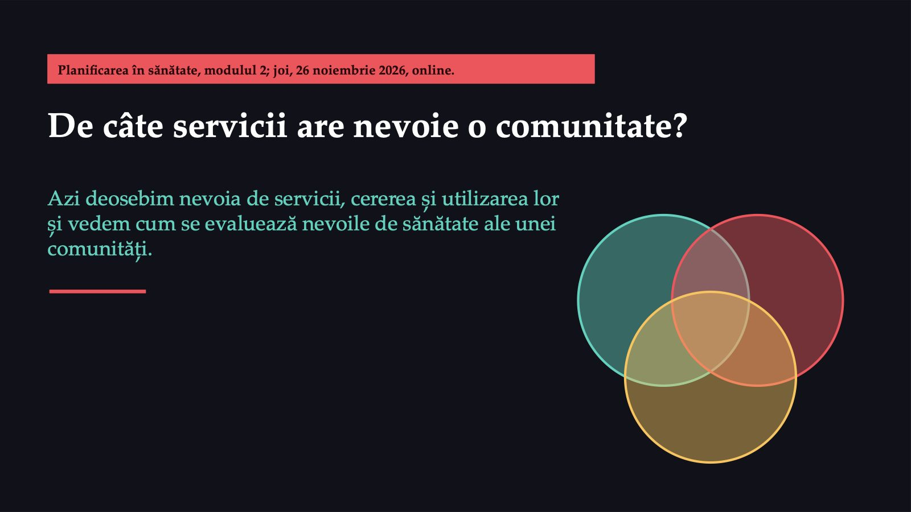
1 / 68Bine ați venit la al doilea modul. Astăzi nu pornim de la definiții, ci de la un document real și de la o întrebare pe care și-o pune orice plan: de câte servicii are nevoie o comunitate și de unde știm.
Cum lucrăm astăzi, online
![DESCHIDEREA Cum lucrăm astăzi, online Pentru răspunsuri folosim o singură pagină: menti.com, cu codul 1208 5895. Intrați acum și lăsați pagina deschisă până la sfârșit. Lucrați în echipe de trei-patru persoane, în camerele separate ale întâlnirii. Fiecare echipă scrie o anexă de calcul în două părți, adică ce ar pune un planificator în anexa unui plan: calculul și ipotezele lui. Calculele le faceți în foaia Excel a echipei, din camera voastră; propozițiile le trimite un membru al echipei în Mentimeter, la întoarcere. ? Pe Mentimeter vă cerem numai opinii și propuneri. La sfârșit, un Kahoot verifică conceptele modulului. Pregătiți un calculator și o foaie de calcul. menti.com · 1208 5895](diapozitive/C02/002.jpg) 2 / 68
2 / 68Lucrați în echipe mici, în camerele separate, pe o anexă de calcul în două părți: prima despre îngrijirile paliative din județul Hunedoara, a doua despre accidentul vascular cerebral în regiunea Vest. Câteva echipe își prezintă anexa la sfârșit. Legăturile și codurile le găsiți și în conversația întâlnirii.
Cum se desfășoară modulul
 3 / 68
3 / 68Modulul are cinci părți. În fiecare, situația vine înaintea conceptului: întâi vedeți ce scrie în plan, apoi primiți instrumentul cu care îl citiți.
?
4 / 68Ați notat, ca pregătire, o frază despre un serviciu pe care îl cunoașteți. Scrieți-o acum în conversația întâlnirii. La sfârșit o veți compara cu metodele de astăzi.
Cazul de azi este un plan real, publicat de minister
![PARTEA ÎNTÂI: CE N-A PUTUT CALCULA PLANUL Cazul de azi este un plan real, publicat de minister Este masterplanul regional de servicii de sănătate pentru regiunea Vest. Pentru fiecare județ, planul descrie paturile de spital existente și propune o configurație viitoare. L-a publicat Ministerul Sănătății în 2023, pentru județele Arad, Caraș-Severin, Hunedoara și Timiș. A fost elaborat într-un proiect cofinanțat din Fondul Social European. Titularul cursului a coordonat elaborarea acestui masterplan.](diapozitive/C02/005.jpg) 5 / 68
5 / 68Cazul de astăzi este real. Ministerul Sănătății a publicat în 2023 masterplanul regional de servicii de sănătate pentru regiunea Vest. Titularul cursului a coordonat elaborarea lui. Documentul este public și îl aveți pe ecran și pe pagina modulului.
351 253
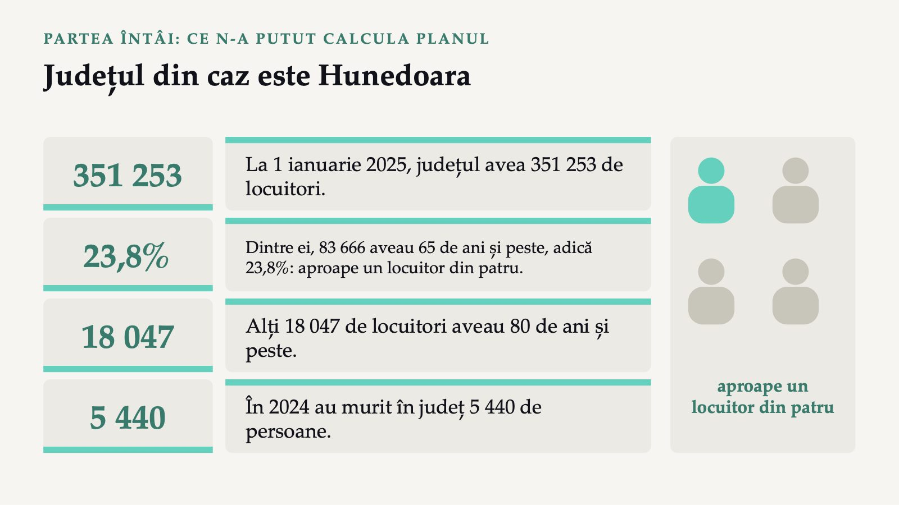
6 / 68Partea despre îngrijirile paliative se oprește la Hunedoara, un județ cu populație îmbătrânită și în scădere. Aproape un locuitor din patru are 65 de ani și peste.
De câte servicii de îngrijiri paliative are nevoie județul?
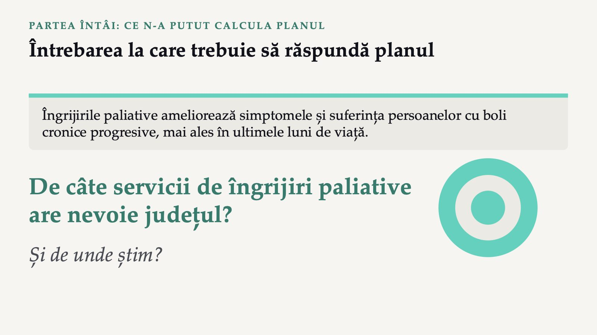
7 / 68Aceasta este întrebarea pe care și-o pune un plan regional și la care lucrați astăzi.
?
8 / 68Înainte de orice cifră, o întrebare de opinie. Orice opinie argumentată este binevenită. Răspunsurile dumneavoastră le comparăm puțin mai târziu cu ce a lipsit echipei planului.
Ce scrie planul despre paturile din Hunedoara
 9 / 68
9 / 68Pentru fiecare județ, planul descrie paturile existente și propune o configurație viitoare. La Hunedoara, după reducerea paturilor pentru bolile acute rămâne un excedent pe care planul îl lasă, în funcție de necesitățile locale, secțiilor de cronici, recuperare și îngrijiri paliative.
Ce face planul când lipsesc datele
![PARTEA ÎNTÂI: CE N-A PUTUT CALCULA PLANUL Ce face planul când lipsesc datele Masterplanul regional de servicii de sănătate, regiunea Vest, Ministerul Sănătății, 2023, p. 57 Planul scrie, la fiecare județ al regiunii: „în lipsa datelor necesare, propunerea tehnică a fost realizată prin considerarea unui număr de paturi aprobate pentru anul 2023 egal cu cel din 2019, iar numărul de cazuri și durata de spitalizare pentru întregul an 2023 au fost estimate pe baza informațiilor disponibile pentru lunile ianuarie-iunie 2023” ? Pe scurt: planul a presupus că paturile din 2023 sunt cele din 2019 și a estimat anul întreg din primele șase luni.](diapozitive/C02/010.jpg) 10 / 68
10 / 68Aceasta este fraza pe care planul o repetă pentru fiecare județ al regiunii. Când datele lipsesc, planificatorul pornește de la ce există, adică de la paturile aprobate și de la cazurile spitalizate, și își scrie ipoteza.
Ce nu a putut calcula echipa planului
![PARTEA ÎNTÂI: CE N-A PUTUT CALCULA PLANUL Ce nu a putut calcula echipa planului Dacă ați scris „câte persoane au nevoie”: aceeași lipsă au avut-o și autorii planului. Echipa nu a putut calcula nevoia reală de îngrijiri paliative. Dacă ați scris „câți bolnavi sunt”: nici frecvența reală a bolilor nu a putut fi calculată. Datele de incidență (cazurile noi) și de prevalență (toate cazurile existente) nu sunt fiabile, spune titularul. ? Dacă ați scris altceva: păstrați-l; îl căutăm în părțile următoare. Existau două feluri de date: morbiditatea spitalizată, adică pacienții externați din spitale, pe diagnostice, și decesele.](diapozitive/C02/011.jpg) 11 / 68
11 / 68Titularul cursului, care a coordonat elaborarea planului, relatează că echipa nu a putut calcula două lucruri: nevoia reală de îngrijiri paliative și frecvența reală a bolilor. Existau date despre morbiditatea spitalizată și despre decese; datele de incidență și de prevalență, spune titularul, nu sunt fiabile.
Întrebarea la care revenim tot modulul
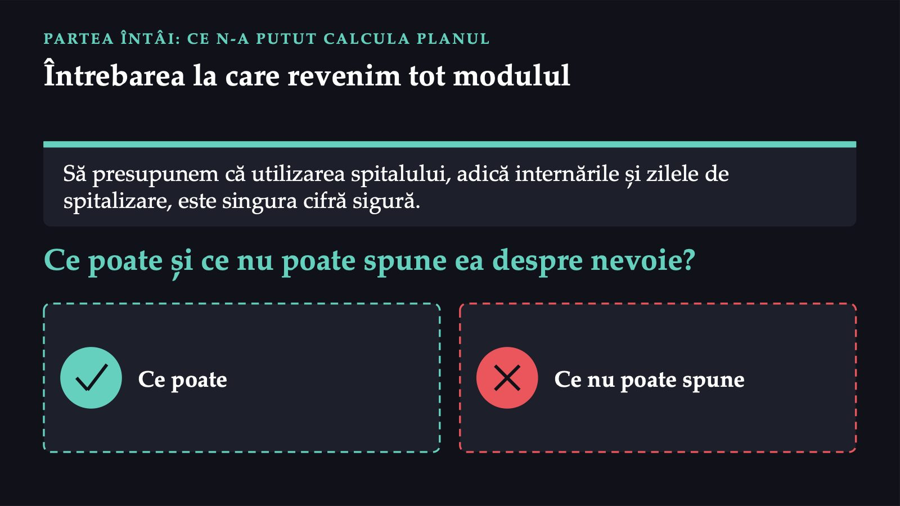
12 / 68Păstrați întrebarea aceasta. Fiecare parte a modulului îi dă o bucată de răspuns.
Ce avea județul în 2019, după plan
![PARTEA A DOUA: ÎNGRIJIRILE PALIATIVE ÎN JUDEȚUL HUNEDOARA Ce avea județul în 2019, după plan 62 În 2019, județul avea 62 de paturi de îngrijiri paliative, în cinci unități. 704 Au fost externate 704 cazuri. Un caz este o internare: o persoană internată de două ori se numără de două ori. 13 417 Cele 704 cazuri au stat în spital, împreună, 13 417 zile. 19,06 Durata medie de spitalizare arată câte zile stă în spital, în medie, un caz: 13 417 zile ÷ 704 cazuri = 19,06 zile. 16,2 Paturile raportate la populație: 62 de paturi ÷ 382 254 de locuitori × 100 000 = 16,2 paturi la 100 000 de locuitori. Regiunea avea 316 paturi, adică 17,8 la 100 000. 59,29% Gradul de ocupare a fost de 59,29%; cum se calculează, vedem puțin mai târziu.](diapozitive/C02/013.jpg) 13 / 68
13 / 68Acestea sunt cifrele din plan pentru Hunedoara, în 2019. Durata medie se obține împărțind zilele la cazuri. Rețineți numărul de cazuri și gradul de ocupare: le folosiți în anexă.
Cum calculează planul ce lipsește: cu o normă
![PARTEA A DOUA: ÎNGRIJIRILE PALIATIVE ÎN JUDEȚUL HUNEDOARA Cum calculează planul ce lipsește: cu o normă Norma planului: 25 de paturi la fiecare 125 000 de locuitori, o clinică ambulatorie la 60 000 și o echipă la domiciliu la 40 000. 1 Pasul 1. De câte ori intră 125 000 în populația județului: 382 254 ÷ 125 000 = 3,058. 2 Pasul 2. Paturile necesare după normă: 3,058 × 25 = 76,45 paturi. 3 Pasul 3. Deficitul este diferența dintre ce cere norma și ce există: 76,45 − 62 = 14,45, adică 14 paturi. 4 Pasul 4. La fel pentru celelalte servicii: 382 254 ÷ 60 000 = 6,4 clinici ambulatorii și 382 254 ÷ 40 000 = 9,6 echipe la domiciliu. Planul nu consemnează în județ nicio clinică și nicio echipă, deci deficitul este de 6 clinici și de 10 echipe.](diapozitive/C02/014.jpg) 14 / 68
14 / 68Planul aplică o normă preluată dintr-un raport din 2017 despre nevoia de îngrijiri paliative. Calculul are trei operații: împărțim populația la populația de referință a normei, înmulțim cu numărul de servicii al normei și scădem ce există.
Ce propune planul
![PARTEA A DOUA: ÎNGRIJIRILE PALIATIVE ÎN JUDEȚUL HUNEDOARA Ce propune planul 14 Pentru Hunedoara: 14 paturi noi în spitalele publice, două-trei clinici ambulatorii și două-trei echipe la domiciliu. 210 Pentru întreaga regiune: acoperirea integrală a deficitului de 210 paturi. 25% Tot pentru regiune: paturile de îngrijire pe termen lung, de recuperare și de îngrijiri paliative să crească cu 25%, adică cu aproximativ 496 de paturi, până în 2030. 1 984 Dacă 496 de paturi înseamnă 25%, baza ar fi 496 ÷ 0,25 = 1 984 de paturi. Planul nu spune ce paturi intră în această bază.](diapozitive/C02/015.jpg) 15 / 68
15 / 68Planul a făcut ce se putea face cu datele disponibile: a pornit de la paturi și de la o normă. Procentul de creștere privește regiunea și cele trei tipuri de îngrijire împreună, nu numai îngrijirile paliative din Hunedoara.
O afirmație de verificat
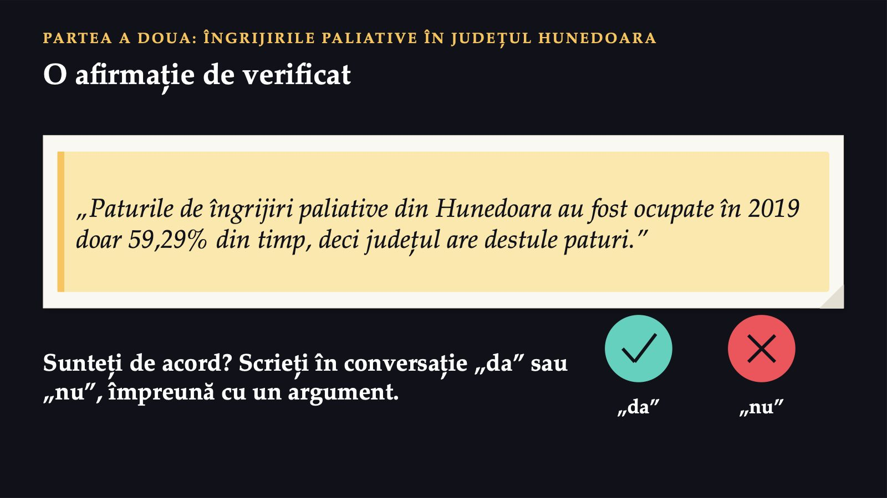
16 / 68Citiți afirmația. O puteți auzi într-o ședință de consiliu județean. Scrieți în conversație dacă sunteți de acord și de ce. Revenim la ea după ce vedem ce măsoară, de fapt, gradul de ocupare.
59,29%
![PARTEA A DOUA: ÎNGRIJIRILE PALIATIVE ÎN JUDEȚUL HUNEDOARA Cum se leagă între ei indicatorii de utilizare 19,06 Durata medie de spitalizare = zilele de spitalizare ÷ numărul de cazuri: 13 417 ÷ 704 = 19,06 zile. 13 418 Invers, cazurile × durata medie dau zilele: 704 × 19,06 = 13 418, aproape cât raportează planul (13 417). Diferența de o zi vine din rotunjirea duratei medii la două zecimale. 22 630 Zilele-pat disponibile = paturile × 365 de zile: 62 × 365 = 22 630. 59,29% Gradul de ocupare = zilele de spitalizare ÷ zilele-pat disponibile: 13 417 ÷ 22 630 = 0,5929, adică 59,29%. 59 Altfel spus: din 100 de zile în care un pat era disponibil, a fost ocupat în circa 59. 59,29%](diapozitive/C02/017.jpg) 17 / 68
17 / 68Indicatorii din plan se leagă între ei prin două împărțiri. Gradul de ocupare spune cât din capacitate s-a folosit, nu câți oameni au nevoie de serviciu.
Patru mărimi diferite: nevoia, dorința, cererea și utilizarea
 18 / 68
18 / 68Manualul descrie cererea ca rezultatul combinat al nevoilor, al dorințelor, al standardelor recomandate și al utilizării efective. Aici le ținem separate, fiindcă se măsoară diferit. Nevoia o stabilesc profesioniștii și se estimează din date epidemiologice. Utilizarea este singura care se înregistrează direct, în evidențele furnizorilor și ale caselor de asigurări.
Cele patru mărimi se suprapun doar în parte
![PARTEA A DOUA: ÎNGRIJIRILE PALIATIVE ÎN JUDEȚUL HUNEDOARA Cele patru mărimi se suprapun doar în parte ? Nevoie fără cerere: oamenii ar beneficia de serviciu, dar nu îl cer, fiindcă nu îl cunosc, nu au acces sau nu au trimitere. Cerere fără nevoie: examene cerute din teamă sau din obișnuință. Cerere neacoperită: oamenii cer, dar nu primesc, de exemplu din cauza listei de așteptare sau a refuzului de internare. Utilizare fără nevoie: servicii primite, dar nejustificate clinic. Nevoie cerere Utilizare](diapozitive/C02/019.jpg) 19 / 68
19 / 68Planificarea încearcă să aducă cele patru cercuri cât mai aproape unul de altul: să crească utilizarea acolo unde nevoia nu e acoperită și s-o reducă acolo unde depășește nevoia.
De ce utilizarea nu măsoară nevoia
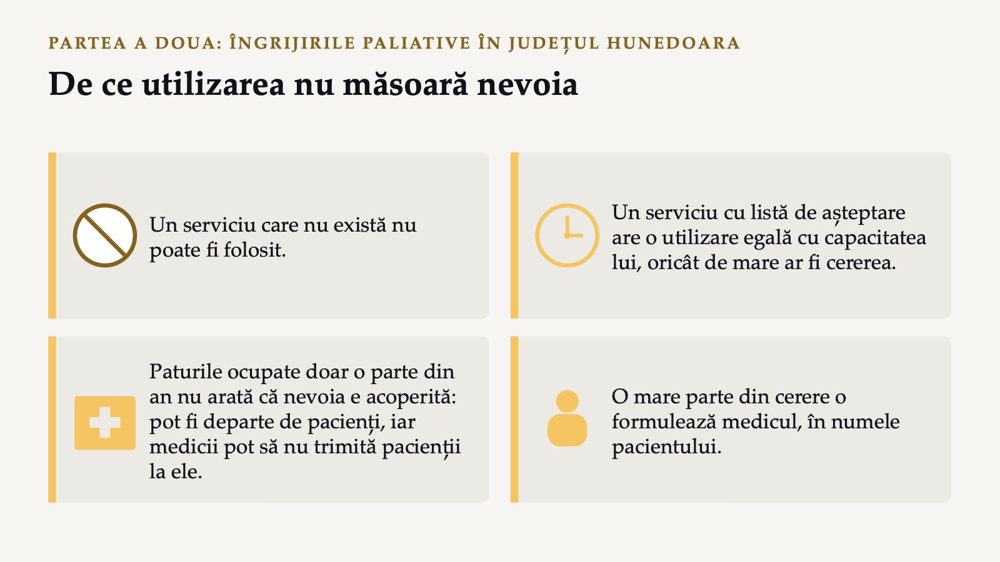
20 / 68Utilizarea depinde de cerere, dar și de ofertă. De aceea utilizarea trecută este un indicator slab al nevoii pentru serviciile puțin dezvoltate, cum sunt îngrijirile paliative.
5 440
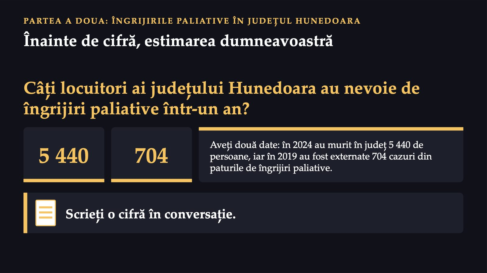
21 / 68Scrieți o cifră în conversația întâlnirii, fără calcule lungi. Contează ordinul de mărime și de la ce ați pornit.
O metodă de estimare: pornim de la decese
![PARTEA A DOUA: ÎNGRIJIRILE PALIATIVE ÎN JUDEȚUL HUNEDOARA O metodă de estimare: pornim de la decese Mulți dintre cei care mor de boli cronice progresive, cum sunt cancerul, insuficiența cardiacă sau demența, au în ultimele luni simptome care pot fi ameliorate prin îngrijiri paliative. Ipoteza: după un studiu din 2017 pentru Anglia și Țara Galilor, aproximativ 75% dintre persoanele aflate aproape de sfârșitul vieții ar putea beneficia de ele. 1 Pasul 1. Decesele din județ, în 2024: 5 440. 2 Pasul 2. Proporția celor care ar fi avut nevoie de îngrijiri paliative: 75%, adică 0,75. 3 Pasul 3. 5 440 × 0,75 = 4 080 de persoane într-un an. Cifra arată un ordin de mărime, nu o măsurătoare. Cu 65% ar fi 5 440 × 0,65 = 3 536 de persoane; cu 85%, 5 440 × 0,85 = 4 624. Fiecare 10 puncte procentuale schimbă rezultatul cu 544 de persoane.](diapozitive/C02/022.jpg) 22 / 68
22 / 68Nevoia anuală este numărul de decese înmulțit cu proporția deceselor precedate de o nevoie de îngrijiri paliative. Proporția este o ipoteză, preluată dintr-un studiu pentru Anglia și Țara Galilor; pentru România, sursele cursului nu conțin o estimare validată. Nu toți cei numărați au nevoie de un serviciu specializat: mulți pot fi îngrijiți de medicul de familie și de echipa de la domiciliu.
17,3%
![PARTEA A DOUA: ÎNGRIJIRILE PALIATIVE ÎN JUDEȚUL HUNEDOARA Nevoia, comparată cu utilizarea 17,3% 14% Cele 704 cazuri externate în 2019, împărțite la nevoia estimată pentru 2024: 704 ÷ 4 080 = 0,173, adică 17,3%: aproximativ unul din șase. ? Comparația este doar orientativă: un caz externat nu este o persoană, fiindcă un pacient poate fi internat de mai multe ori, iar anii diferă. La scară mondială, Organizația Mondială a Sănătății estimează că 56,8 milioane de oameni au nevoie de îngrijiri paliative în fiecare an și că doar aproximativ 14% dintre ei le primesc.](diapozitive/C02/023.jpg) 23 / 68
23 / 68Prima cifră a planificatorului este estimarea nevoii pentru populația deservită; standardul, cererea și utilizarea se citesc în raport cu ea. Reveniți acum la afirmația despre gradul de ocupare: el măsoară cât din capacitate s-a folosit, nu câți oameni au nevoie.
A treia cale: standardul recomandat
![PARTEA A DOUA: ÎNGRIJIRILE PALIATIVE ÎN JUDEȚUL HUNEDOARA A treia cale: standardul recomandat Un standard este un număr de servicii raportat la populație, stabilit prin consens profesional. Reperul Asociației Europene pentru Îngrijiri Paliative (EAPC): o echipă de îngrijiri la domiciliu la 100 000 de locuitori; un serviciu cu paturi și o echipă de sprijin în spital la 200 000 de locuitori. Un serviciu cu paturi are, optim, 8–12 paturi. 1 Pasul 1. Echipele la domiciliu: 351 253 de locuitori ÷ 100 000 = 3,5 echipe. 2 Pasul 2. Serviciile cu paturi: 351 253 ÷ 200 000 = 1,8 servicii. Un serviciu nu se poate împărți, așa că rotunjim la 2 servicii. 3 Pasul 3. Paturile: 2 servicii × 8 paturi = 16 paturi; 2 servicii × 12 paturi = 24 de paturi. Reperul este deci de aproximativ 16–24 de paturi. Tot 1,8, adică două, rezultă și pentru echipele de sprijin din spital.](diapozitive/C02/024.jpg) 24 / 68
24 / 68Standardul are avantajul simplității și al comparabilității, dar presupune că populația căreia i se aplică seamănă cu cea pentru care a fost stabilit.
Două standarde dau cifre diferite pentru același județ
![PARTEA A DOUA: ÎNGRIJIRILE PALIATIVE ÎN JUDEȚUL HUNEDOARA Două standarde dau cifre diferite pentru același județ Norma planului, aplicată celor 351 253 de locuitori din 2025: paturi: 351 253 ÷ 125 000 = 2,81; 2,81 × 25 = 70,3 paturi; echipe la domiciliu: 351 253 ÷ 40 000 = 8,8 echipe; clinici ambulatorii: 351 253 ÷ 60 000 = 5,9 clinici. Reperul EAPC dă 3,5 echipe la domiciliu și 16–24 de paturi. paturi Norma planului 70,3 Reperul EAPC 16–24 echipe la domiciliu Norma planului 8,8 Reperul EAPC 3,5 ? Ambele au aceeași limită: un standard numără locuitorii, nu decesele. Comparația: 70,3 paturi față de cel mult 24 înseamnă 70,3 ÷ 24 = 2,9, adică aproape de trei ori mai mult; la echipe, 8,8 ÷ 3,5 = 2,5. Niciun standard nu poate înlocui estimarea nevoii.](diapozitive/C02/025.jpg) 25 / 68
25 / 68Un județ care îmbătrânește are, la același număr de locuitori, mai multe decese și deci mai multă nevoie de îngrijiri paliative decât un județ tânăr. Standardul rămâne un reper pentru comparații între județe sau țări.
9,4%
![PARTEA A DOUA: ÎNGRIJIRILE PALIATIVE ÎN JUDEȚUL HUNEDOARA Din 2025 până în 2040, populația județului scade, dar îmbătrânește Modificarea procentuală se calculează așa: (valoarea din 2040 − valoarea din 2025) ÷ valoarea din 2025. 9,4% Populația județului, după proiecția Eurostat, biroul de statistică al Uniunii Europene: (318 152 − 351 253) ÷ 351 253 = −33 101 ÷ 351 253 = −0,094, adică 9,4% mai puțini locuitori în 2040. 60,3% Persoanele de 80 de ani și peste: (28 931 − 18 047) ÷ 18 047 = 10 884 ÷ 18 047 = 0,603, adică 60,3% mai multe. O afirmație de verificat: „Populația județului scade, deci nevoia de servicii de sănătate scade.”](diapozitive/C02/026.jpg) 26 / 68
26 / 68Proiecția oficială arată două tendințe opuse. Un plan care ar porni de la populația totală ar propune mai puține servicii; unul care pornește de la grupele de vârstă ar propune mai multe.
De ce se schimbă cererea și utilizarea: patru familii de factori
![PARTEA A DOUA: ÎNGRIJIRILE PALIATIVE ÎN JUDEȚUL HUNEDOARA De ce se schimbă cererea și utilizarea: patru familii de factori Factorii demografici: vârsta, care arată probabil cel mai bine cât folosește cineva serviciile, apoi sexul și structura gospodăriei. Factorii socioeconomici: venitul, educația și ocupația. Tehnologia: apar servicii noi, iar cele existente se folosesc pentru mai multe indicații. Factorii structurali: asigurarea de sănătate, serviciile disponibile și obiceiurile de lucru ale medicilor.](diapozitive/C02/027.jpg) 27 / 68
27 / 68Pentru planificator, fiecare factor este o întrebare de pus despre populația deservită. La îngrijirile paliative la domiciliu, existența unui aparținător disponibil este adesea o condiție a serviciului.
Elasticitatea cererii
![PARTEA A DOUA: ÎNGRIJIRILE PALIATIVE ÎN JUDEȚUL HUNEDOARA Elasticitatea cererii Elasticitatea arată cât de mult se schimbă cererea atunci când se schimbă prețul plătit de pacient, distanța sau timpul de așteptare. Modificarea procentuală a cantității cerute Modificarea procentuală a prețului Se calculează ca raport: modificarea procentuală a cantității cerute ÷ modificarea procentuală a prețului. Exemplu construit, cu cifre inventate pentru calcul: plata pentru o consultație crește cu 10%, iar numărul consultațiilor scade cu 2%. Elasticitatea este −2% ÷ 10% = −0,2. Rezultatul este, fără semn, sub 1: cererea este inelastică, adică scade mai puțin decât crește prețul. Dacă consultațiile ar scădea cu 15%, elasticitatea ar fi −15% ÷ 10% = −1,5: cerere elastică. La îngrijirile paliative la domiciliu, „prețul” este adesea timpul și efortul aparținătorului.](diapozitive/C02/028.jpg) 28 / 68
28 / 68Dacă cererea scade cu mai puțin decât crește prețul, este inelastică; dacă scade cu mai mult, este elastică. Elasticitatea nu privește numai prețul: un serviciu mutat departe pierde pacienții care nu au transport.
Două feluri de a proiecta decesele din 2040
![PARTEA A DOUA: ÎNGRIJIRILE PALIATIVE ÎN JUDEȚUL HUNEDOARA Două feluri de a proiecta decesele din 2040 Calea 1, cu rata brută de deces, adică decesele raportate la toată populația: 5 440 de decese ÷ 351 253 de locuitori = 0,0155 (15,5 decese la 1 000 de locuitori). Rata brută × populația din 2040: 0,0155 × 318 152 = aproximativ 4 927 de decese, mai puține decât azi. Calea aceasta presupune, fără să o spună, că structura pe vârste rămâne aceeași. Calea 2, pe grupe de vârstă: pentru fiecare grupă, rata de deces de azi a grupei × câte persoane va avea grupa în 2040; apoi adunăm grupele. Rezultatul este 6 714 decese în 2040. Comparația: 6 714 ÷ 5 440 = 1,234, adică cu 23,4% mai multe decese decât în 2024.](diapozitive/C02/029.jpg) 29 / 68
29 / 68Diferența dintre cele două căi vine din îmbătrânire: riscul de deces crește puternic cu vârsta, iar grupele vârstnice cresc chiar dacă populația scade. Calculul pe fiecare grupă îl găsiți în note.
Hunedoara, 2025–2050: populația, decesele și nevoia de îngrijiri paliative
![PARTEA A DOUA: ÎNGRIJIRILE PALIATIVE ÎN JUDEȚUL HUNEDOARA Hunedoara, 2025–2050: populația, decesele și nevoia de îngrijiri paliative Nevoia din fiecare rând = decesele din acel an × 0,75; de exemplu, pentru 2040: 6 714 × 0,75 = 5 036. În 2025: 351 253 de locuitori, dintre care 18 047 de 80 de ani și peste; 5 440 de decese; nevoia, 4 080 de persoane. În 2030: 341 519 locuitori, dintre care 21 126 de 80 de ani și peste; 5 847 de decese; nevoia, 4 385 de persoane. În 2035: 329 315 locuitori, dintre care 25 509 de 80 de ani și peste; 6 350 de decese; nevoia, 4 763 de persoane. În 2040: 318 152 de locuitori, dintre care 28 931 de 80 de ani și peste; 6 714 decese; nevoia, 5 036 de persoane. În 2050: 297 012 locuitori, dintre care 32 771 de 80 de ani și peste; 6 975 de decese; nevoia, 5 231 de persoane. Decesele din rândul pentru 2025 sunt cele din 2024; anii următori sunt proiecție (Eurostat, scenariul de bază).](diapozitive/C02/030.jpg) 30 / 68
30 / 68Nevoia de îngrijiri paliative a județului ar crește de la 4 080 la 5 036 de persoane pe an până în 2040, deși populația totală scade. Cifrele din 2024 și din 2040 le aveți în anexă.
Ipotezele proiecției se scriu explicit
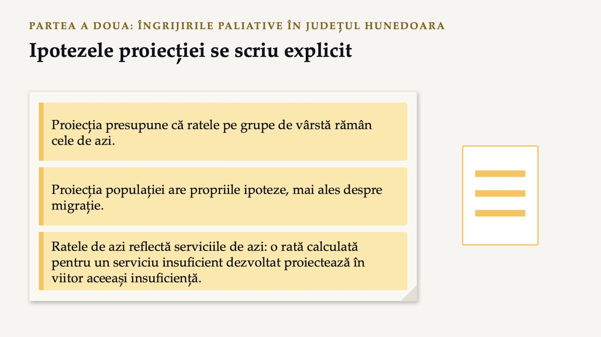
31 / 68O proiecție este o extrapolare a unor ipoteze, nu o prognoză. Planificatorul le scrie explicit, ca cititorul să știe ce s-ar schimba dacă ipoteza ar fi falsă.
Anexa de calcul, partea întâi: paturile de îngrijiri paliative din Hunedoara
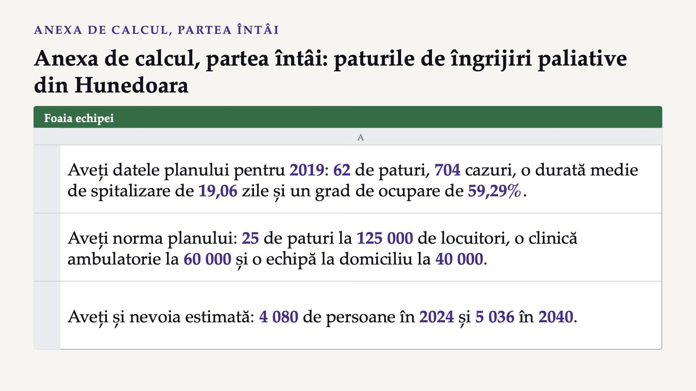
32 / 68Treceți acum în camerele separate. Aveți datele planului, norma lui și estimarea nevoii. Din ele scrieți prima parte a anexei de calcul.
Cele trei sarcini
![ANEXA DE CALCUL, PARTEA ÎNTÂI Cele trei sarcini (a) Verificați gradul de ocupare din plan, pornind de la paturi, cazuri și durata medie de spitalizare. (b) Aplicați populației din 2025 norma planului și standardul EAPC, apoi comparați rezultatele cu paturile existente. (c) Calculați câte paturi ar fi necesare dacă ar fi internată o cincime dintre persoanele care, după estimare, au nevoie de îngrijiri paliative, cu durata medie din plan și un grad de ocupare țintă de 85%, pentru 2024 și pentru 2040.](diapozitive/C02/033.jpg) 33 / 68
33 / 68Sarcinile sunt trei și se fac în ordine. La a treia, ipoteza este a dumneavoastră: o puteți schimba, dacă o scrieți.
40
![ANEXA DE CALCUL, PARTEA ÎNTÂI Ce predă echipa 40 min Foaia de calcul cu cele trei sarcini, completată în fișierul Excel al întâlnirii. Două propoziții scurte, de cel mult 200 de caractere fiecare: 1. Câte paturi ați propune pentru județ și ce ipoteză susține cifra? 2. Ce serviciu din afara spitalului (echipa la domiciliu, clinica ambulatorie) ar schimba cel mai mult cifra și de ce? Aveți 40 de minute, în camerele separate. La întoarcere, cele două întrebări apar pe rând în Mentimeter; un membru al echipei trimite propozițiile, începând cu numele echipei.](diapozitive/C02/034.jpg) 34 / 68
34 / 68Ce predați este ce ar pune un planificator în anexa unui plan: calculul și ipoteza lui, în două propoziții pe care le poate citi cineva care n-a fost în cameră.
Răspunsul apare după ședință
Răspunsul apare după ședință
Răspunsul apare după ședință
Răspunsul apare după ședință
Răspunsul apare după ședință
Răspunsul apare după ședință
Pauză
38 / 68Accidentul vascular cerebral (AVC): aceeași întrebare, pusă invers
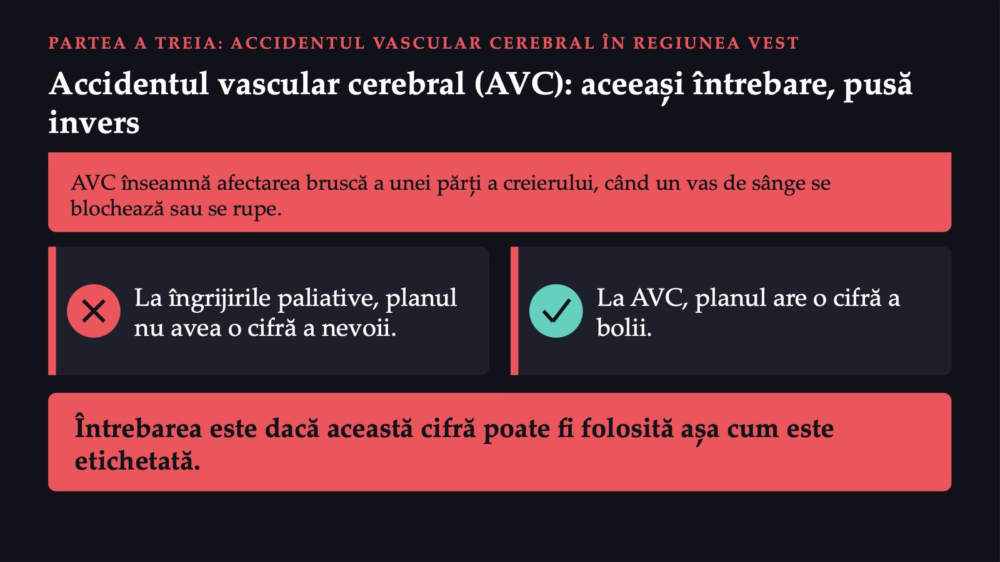
39 / 68Partea a doua a pornit de la o nevoie estimată din decese. La accidentul vascular cerebral, planul are o cifră a bolii, iar întrebarea este dacă o putem folosi.
Traseul pacientului cu AVC, în proiectul de lucru al planului
![PARTEA A TREIA: ACCIDENTUL VASCULAR CEREBRAL ÎN REGIUNEA VEST Traseul pacientului cu AVC, în proiectul de lucru al planului Ambulatoriul de specialitate: consultațiile, dar și laboratorul, explorările funcționale și imagistica. Urgența prespitalicească, adică îngrijirea de până la sosirea în spital, și spitalizarea de zi. Spitalizarea pentru bolile acute: neurologia și neurochirurgia, unitatea pentru AVC, reabilitarea neurologică precoce, terapia intensivă și laboratorul de angiografie pentru trombectomie, adică pentru scoaterea cheagului din vas. La sfârșit, spitalizarea pentru cronici, cu reabilitarea neurologică, și îngrijirile la domiciliu.](diapozitive/C02/040.jpg) 40 / 68
40 / 68Proiectul de lucru al planului, nepublicat, descrie pe niveluri de îngrijire serviciile de care are nevoie un pacient cu AVC. În planul publicat, boala nu are un traseu propriu; apare ca rând al profilului stării de sănătate din anexă. Citiți traseul și căutați ce lipsește din el.
Ce lipsește din traseu
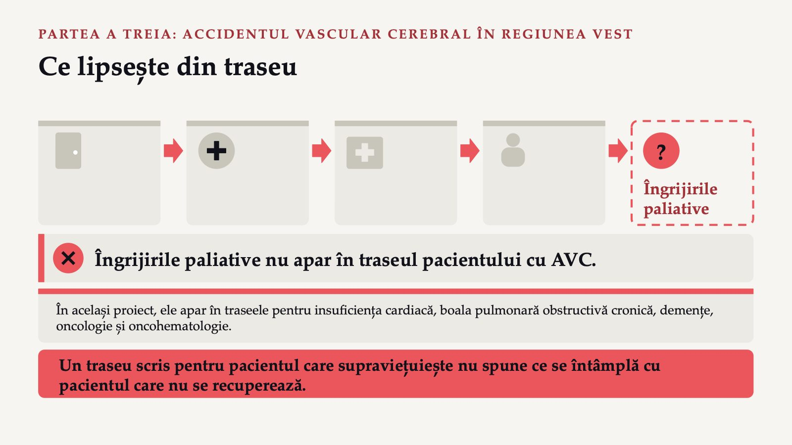
41 / 68Lipsa aceasta o veți întâlni din nou în a doua parte a anexei, când vedeți la ce vârste se produc decesele.
O cifră numită incidență
 42 / 68
42 / 68Acesta este rândul din planul publicat. Îl vedeți în document, așa cum apare.
?
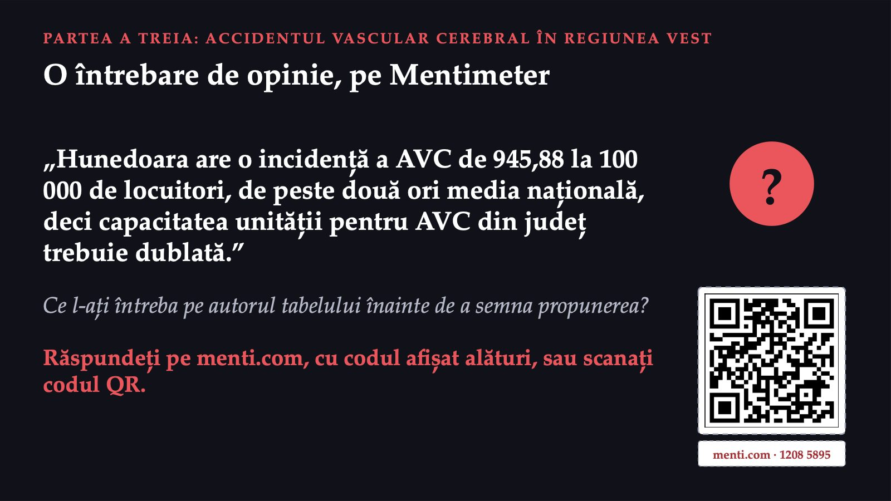
43 / 68Primiți propunerea aceasta spre semnare. Scrieți o întrebare pe care i-ați pune-o autorului tabelului înainte de a semna.
Ce nu spune tabelul
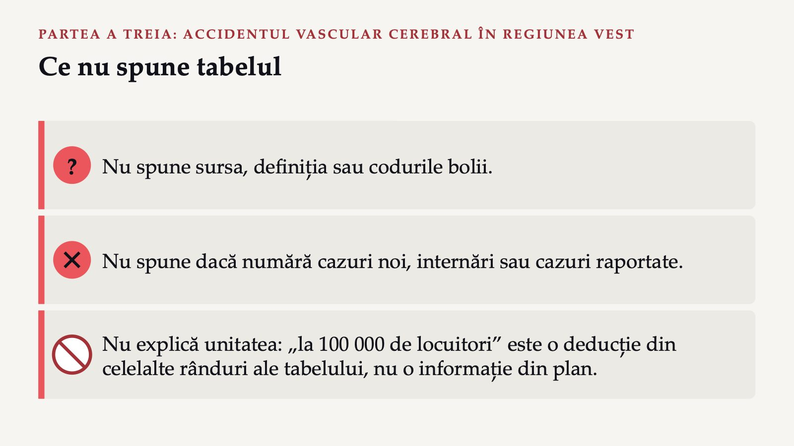
44 / 68Eticheta unui rând nu spune ce numără rândul. Întrebările dumneavoastră sunt cele la care tabelul nu răspunde.
Confruntarea cu o serie definită (1): raportul național
![PARTEA A TREIA: ACCIDENTUL VASCULAR CEREBRAL ÎN REGIUNEA VEST Confruntarea cu o serie definită (1): raportul național O serie definită spune exact ce numără, după ce coduri și din ce sursă. Eurostat a înregistrat în 2019 externări cu diagnostic principal de boală cerebrovasculară, adică boli ale vaselor creierului (codurile I60–I69): 550,8 la 100 000 de locuitori în România și 530,7 în regiunea Vest. ? Valoarea națională din plan, împărțită la externările Eurostat: 428,08 ÷ 550,8 = 0,78. Cifra planului este cu aproximativ 22% mai mică decât externările. Valoarea națională 428,08 Eurostat 550,8](diapozitive/C02/045.jpg) 45 / 68
45 / 68Categoria Eurostat este mai largă decât accidentul vascular cerebral acut. O valoare națională mai mică s-ar putea explica printr-o definiție mai îngustă.
Confruntarea cu o serie definită (2): media celor patru județe
![PARTEA A TREIA: ACCIDENTUL VASCULAR CEREBRAL ÎN REGIUNEA VEST Confruntarea cu o serie definită (2): media celor patru județe Județele au populații diferite, deci media lor se calculează ponderat: un județ mai populat cântărește mai mult. 1 Pasul 1. Valoarea din plan × populația județului ÷ 100 000 (populația din 2019): Arad 536,28 × 417 422 ÷ 100 000 = 2 239; Caraș-Severin 1 050,21 × 271 292 ÷ 100 000 = 2 849; Hunedoara 945,88 × 383 647 ÷ 100 000 = 3 629; Timiș 470,09 × 705 113 ÷ 100 000 = 3 315. Arad 2 239 + Caraș-Severin 2 849 + Hunedoara 3 629 + Timiș 3 315 2 Pasul 2. Adunăm: 2 239 + 2 849 + 3 629 + 3 315 = 12 032. 3 Pasul 3. Împărțim la populația celor patru județe și înmulțim cu 100 000: 12 032 ÷ 1 777 474 × 100 000 = 676,9. 4 Pasul 4. Comparăm cu externările din regiune: 676,9 ÷ 530,7 = 1,28. Media județelor este cu aproximativ 28% mai mare decât externările.](diapozitive/C02/046.jpg) 46 / 68
46 / 68Categoria Eurostat este mai largă decât accidentul vascular cerebral acut. O valoare națională mai mică s-ar putea explica printr-o definiție mai îngustă, dar media județelor, mai mare decât externările din categoria largă, nu se explică astfel. Planul nu folosește aceeași definiție sau aceeași sursă.
?
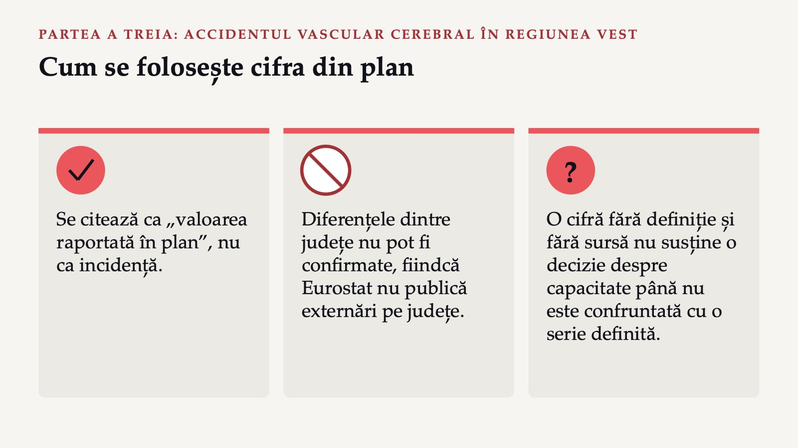
47 / 68Ordinul de mărime pare mai apropiat de al cazurilor spitalizate decât de al cazurilor noi; este o deducție a notelor, iar cauza rămâne o ipoteză.
66,3%
![PARTEA A TREIA: ACCIDENTUL VASCULAR CEREBRAL ÎN REGIUNEA VEST Ce se poate folosi: decesele În regiunea Vest au murit prin boli cerebrovasculare, în medie, 2 677 de persoane pe an în 2021–2023 (în România, 37 062). Dintre ele, 997 aveau 75–84 de ani și 778 aveau 85 de ani și peste. Împreună: 997 + 778 = 1 775. Partea lor din total: 1 775 ÷ 2 677 = 0,663, adică 66,3%: două treimi dintre decese. Rata brută de deces prin aceste boli a fost, în 2023, de 138,38 la 100 000 de locuitori în regiune (în România, 166,74). 66,3% două treimi](diapozitive/C02/048.jpg) 48 / 68
48 / 68Eurostat nu publică numărul anual de decese pe regiuni, ci media pe trei ani și rata anuală. Ce se vede limpede este vârsta la care se produc decesele.
Ce se poate folosi: externările
![PARTEA A TREIA: ACCIDENTUL VASCULAR CEREBRAL ÎN REGIUNEA VEST Ce se poate folosi: externările În regiunea Vest, externările au scăzut de la 9 417 în 2019 (530,7 la 100 000) la 3 914 în 2021 (228,4 la 100 000). O serie nouă, care numără pacienții după regiunea în care locuiesc, dă 4 851 de externări în 2022 și 6 166 în 2023; dintre cele din 2023, 4 441 au fost la 65 de ani și peste. 9 417 2019 3 914 2021 4 851 2022 6 166 2023 Cele două serii folosesc reguli de raportare diferite și nu se citesc ca o singură serie.](diapozitive/C02/049.jpg) 49 / 68
49 / 68Scăderea din anii pandemiei nu are aici o explicație verificată. Pentru proiecție contează ce nivel alegeți ca punct de plecare: cel de după pandemie sau cel de dinainte.
Populația regiunii Vest, din 2025 până în 2040
![PARTEA A TREIA: ACCIDENTUL VASCULAR CEREBRAL ÎN REGIUNEA VEST Populația regiunii Vest, din 2025 până în 2040 Populația regiunii: (1 594 185 − 1 671 030) ÷ 1 671 030 = −76 845 ÷ 1 671 030 = −0,046, adică 4,6% mai puțini locuitori în 2040 decât în 2025. 1 671 030 1 594 185 Persoanele de 65 de ani și peste, adunate din trei grupe: în 2025, 213 641 + 106 391 + 32 531 = 352 563; în 2040, 212 190 + 130 060 + 54 494 = 396 744. Modificarea: (396 744 − 352 563) ÷ 352 563 = 44 181 ÷ 352 563 = 0,125, adică 12,5% mai mulți vârstnici. 352 563 396 744](diapozitive/C02/050.jpg) 50 / 68
50 / 68Aceeași situație ca la Hunedoara, la scara regiunii: populația scade, iar numărul vârstnicilor crește.
Proiecția deceselor prin boli cerebrovasculare, pe grupe de cinci ani
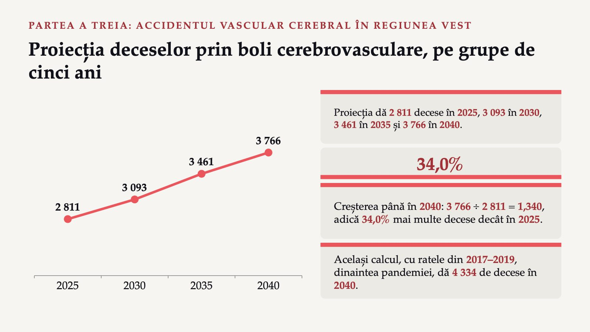
51 / 68Ratele pe grupe de vârstă ale mediei 2021–2023 se aplică populației proiectate pe aceleași grupe. Rezultatul depinde de anii din care luați ratele.
Ce se poate și ce nu se poate face cu aceste date
![PARTEA A TREIA: ACCIDENTUL VASCULAR CEREBRAL ÎN REGIUNEA VEST Ce se poate și ce nu se poate face cu aceste date Ce nu se poate face Ce se poate Datele nu dau incidența, adică numărul cazurilor noi. Notele cursului nu propun un standard de paturi pentru unitatea de AVC sau pentru reabilitarea neurologică, fiindcă niciun asemenea standard nu a fost citit integral pentru curs. Se poate spune însă cu cât cresc, ca ordin de mărime, decesele și externările și în ce grupe de vârstă se concentrează creșterea.](diapozitive/C02/052.jpg) 52 / 68
52 / 68De aici pornește a doua parte a anexei: unde se vor cere unitatea pentru AVC, reabilitarea și îngrijirea de la domiciliu.
Anexa de calcul, partea a doua: AVC în 2040
![ANEXA DE CALCUL, PARTEA A DOUA Anexa de calcul, partea a doua: AVC în 2040 Aveți, pe patru grupe de vârstă, rata de deces prin boli cerebrovasculare la 100 000 de locuitori și populația regiunii Vest în 2025 și în 2040. Foaia echipei A Sub 65 de ani: rata este 21,5; populația, 1 318 467 în 2025 și 1 197 441 în 2040. La 65–74 de ani: rata este 290,6; populația, 213 641 și 212 190. La 75–84 de ani: rata este 969,1; populația, 106 391 și 130 060. La 85 de ani și peste: rata este 2 690,0; populația, 32 531 și 54 494. În total, regiunea are 1 671 030 de locuitori în 2025 și 1 594 185 în 2040.](diapozitive/C02/053.jpg) 53 / 68
53 / 68Lucrați în aceleași echipe, cu aceeași metodă ca în partea a doua: rata pe grupe de vârstă, înmulțită cu populația proiectată pe aceleași grupe.
30
![ANEXA DE CALCUL, PARTEA A DOUA Cele trei sarcini și ce predă echipa 30 min (a) Calculați decesele din 2040 pe fiecare grupă de vârstă și totalul. ? (b) Comparați totalul cu proiecția pe grupe de cinci ani (3 766 de decese) și explicați de unde vine diferența. (c) Scrieți ce ar decide un plan pe baza proiecției și ce ipoteze ascunde ea. Echipa predă foaia completată și trei propoziții scurte (200 de caractere fiecare): decizia, ipoteza care ar schimba-o cel mai mult și o întrebare pentru autorul rândului „incidență” din plan. Aveți 30 de minute, în camerele separate. La întoarcere, cele trei întrebări apar pe rând în Mentimeter.](diapozitive/C02/054.jpg) 54 / 68
54 / 68La a treia sarcină, gândiți-vă la toate nivelurile traseului: unitatea pentru AVC, reabilitarea precoce, reabilitarea pentru cronici, îngrijirile la domiciliu, îngrijirile paliative.
Răspunsul apare după ședință
Răspunsul apare după ședință
Răspunsul apare după ședință
Răspunsul apare după ședință
Răspunsul apare după ședință
Răspunsul apare după ședință
A doua pauză
 58 / 68
58 / 68Două limite ale datelor, un singur instrument
![PARTEA A PATRA: EVALUAREA NEVOILOR DE SĂNĂTATE ALE COMUNITĂȚII Două limite ale datelor, un singur instrument Utilizarea spitalului nu spune de ce oamenii nu ajung la servicii. O cifră oficială nu spune singură ce numără. Instrumentul este evaluarea nevoilor de sănătate ale comunității (community health needs assessment, CHNA). Evaluarea culege și analizează date despre populație, despre starea ei de sănătate și despre resursele ei, apoi ierarhizează problemele și se încheie cu un plan de implementare.](diapozitive/C02/059.jpg) 59 / 68
59 / 68Primele trei părți au arătat două limite ale datelor. Pentru amândouă, instrumentul este evaluarea nevoilor de sănătate ale comunității, pe care o aplicați individual în prima activitate practică.
Pașii evaluării nevoilor
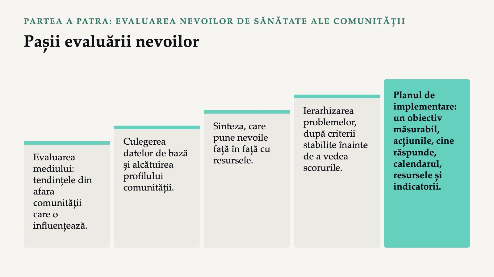
60 / 68O evaluare a nevoilor care nu se încheie cu un plan de implementare este un raport, nu un instrument de planificare.
Profilul comunității, în prima activitate practică (AP1)
![PARTEA A PATRA: EVALUAREA NEVOILOR DE SĂNĂTATE ALE COMUNITĂȚII Profilul comunității, în prima activitate practică (AP1) Populația: vârsta, sexul, structura gospodăriei, venitul, educația. Starea de sănătate: morbiditatea, adică bolile din populație, mortalitatea pe cauze și pe vârste și determinanții sociali, adică condițiile sociale care influențează sănătatea. Resursele: unitățile sanitare, serviciile, personalul, finanțarea și resursele proprii ale comunității, adică organizațiile neguvernamentale, cultele și voluntarii. AP1 se face individual, pentru alt județ decât Hunedoara.](diapozitive/C02/061.jpg) 61 / 68
61 / 68În profil apar cele două probleme de astăzi. La starea de sănătate, un indicator are sens numai dacă știți ce numără. La resurse, adăugați la cifrele spitalului unde locuiesc vârstnicii, câți trăiesc singuri și ce servicii există în afara spitalului.
O problemă bine formulată spune cine, câți și cu ce tendință
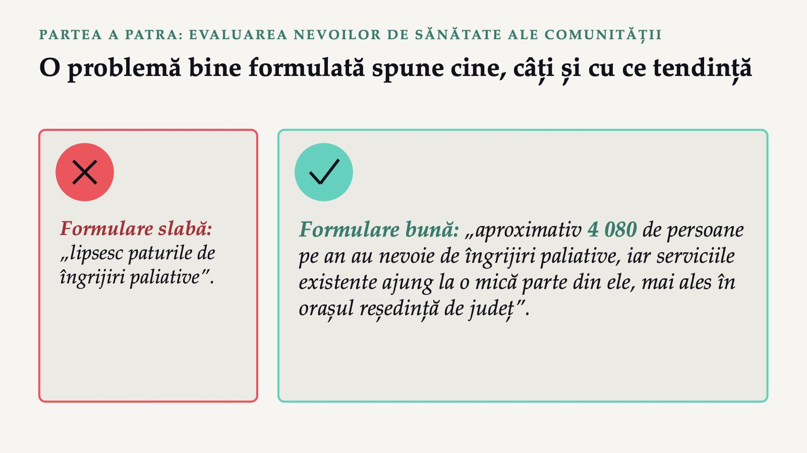
62 / 68Sinteza pune față în față nevoile și resursele și formulează problemele. Comparați cele două formulări cu propozițiile din anexa dumneavoastră.
De ce nu erau pline paturile?
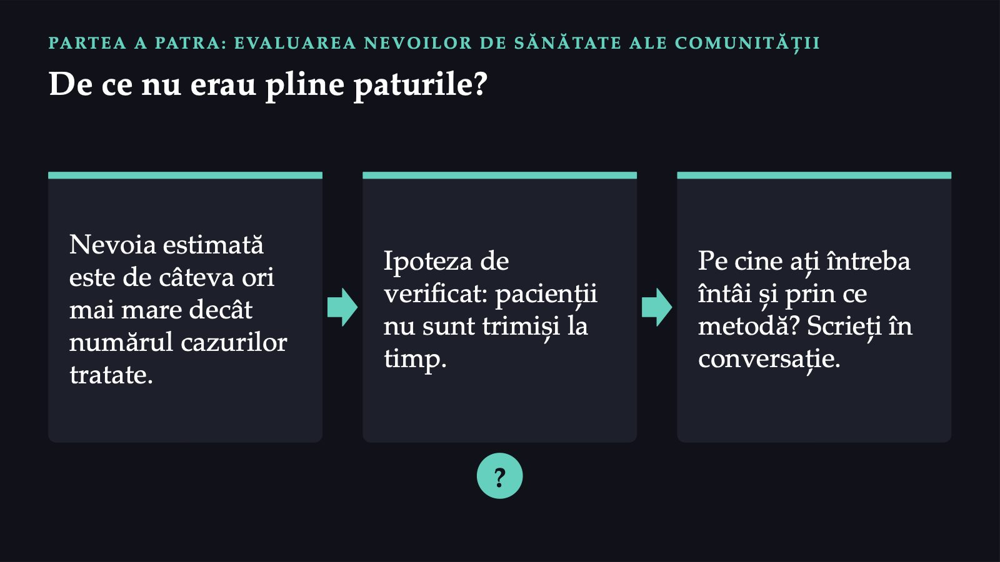
63 / 68Anexa a lăsat o întrebare deschisă. Scrieți în conversație pe cine ați întreba întâi și prin ce metodă.
Întâi aflăm „de ce”, apoi măsurăm „cât”
 64 / 68
64 / 68La întrebările de tipul „de ce” răspund mai bine metodele calitative, care descoperă explicații neanticipate. Datele casei de asigurări spun cât s-a decontat, nu de ce nu s-a cerut. Metodele cantitative măsoară apoi ce au găsit cele calitative.
Sursele de date și limitele lor
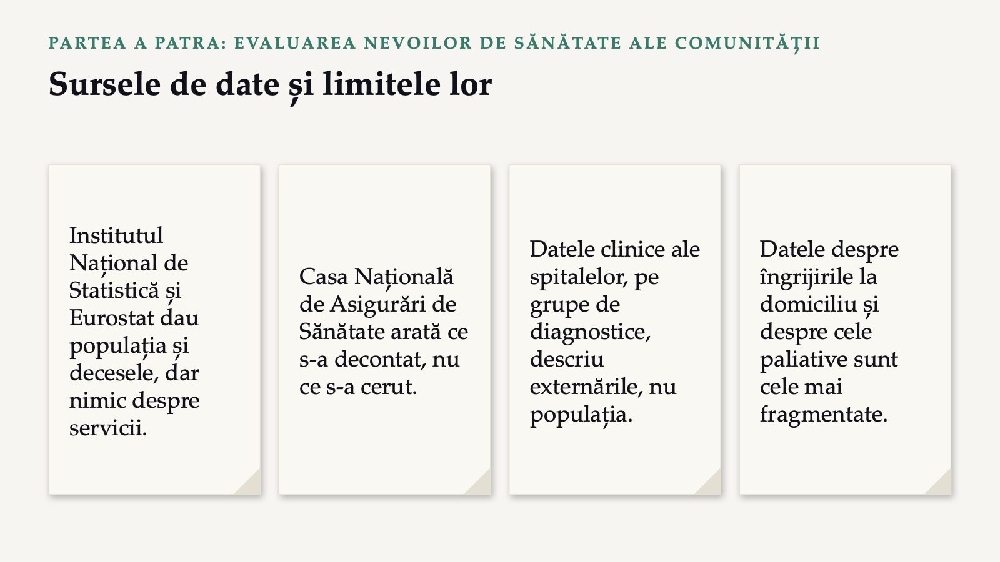
65 / 68O evaluare a nevoilor folosește sursele împreună și scrie, pentru fiecare cifră, de unde vine, la ce an se referă și ce nu poate spune. Așa veți scrie și profilul din prima activitate practică.
Anexele echipelor
 66 / 68
66 / 68Ascultați anexele colegilor ca un comitet de planificare: cifra, ipoteza și ce se întâmplă dacă ipoteza se dovedește falsă. Titularul comentează fiecare anexă, mai ales alegerea ipotezelor.
Ce faceți diferit luni dimineață
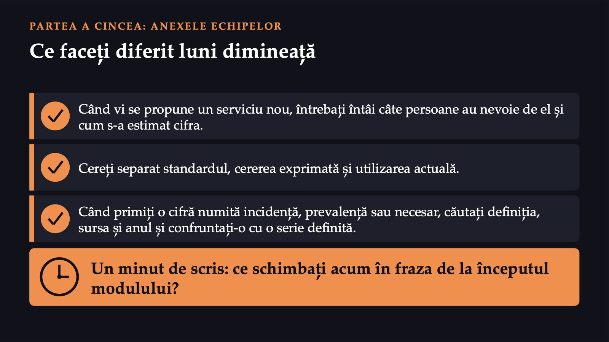
67 / 68Reveniți la fraza pe care ați scris-o la început, despre serviciul pe care îl cunoașteți. Scrieți în conversație ce ați schimba acum în ea.
?
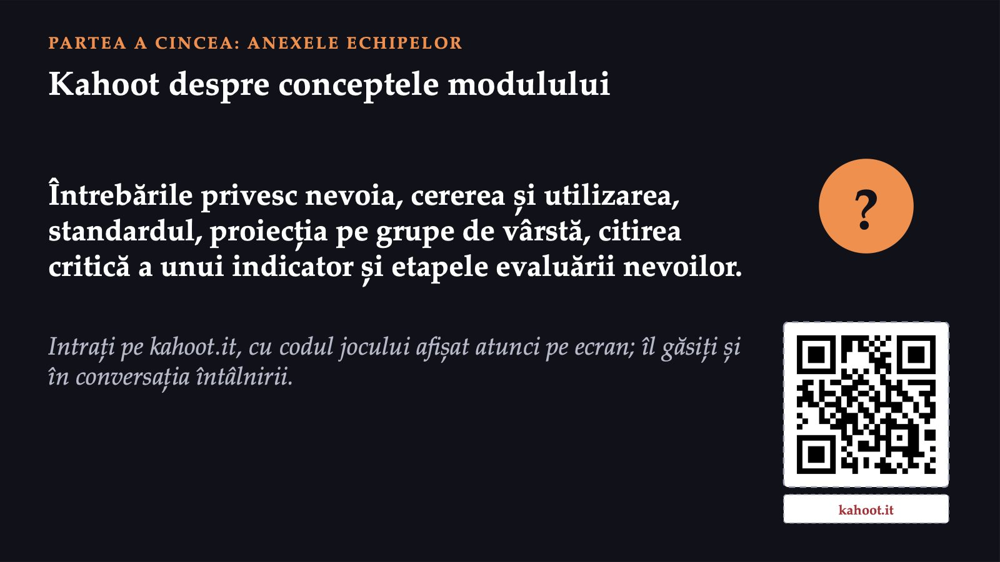
68 / 68Încheiem cu un Kahoot despre conceptele de astăzi. Notele complete ale modulului vor apărea ulterior pe pagina lui.
Săgeți sau spațiu: navigare · O: vedere de ansamblu · N: notele prezentatorului · F: ecran complet · Esc: închidere